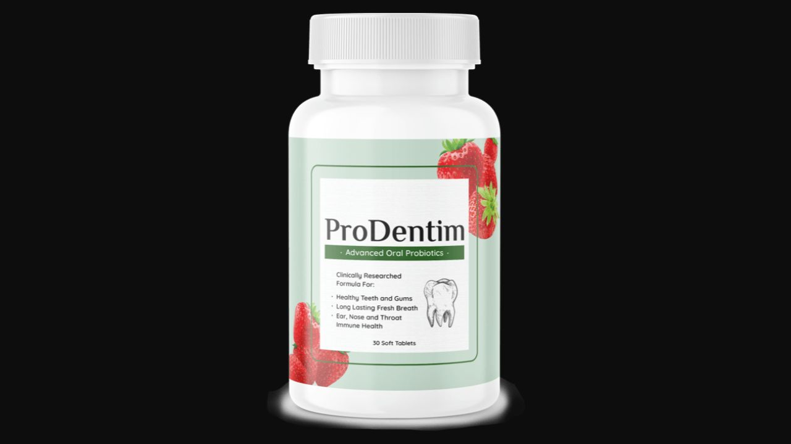

I analyzed ProDentim's formula against 14 scientific references and 95,000 verified reviews. Here's the honest truth about whether this oral probiotic delivers on its remarkable reputation.
▶ Watch our full ProDentim video review before buying
ProDentim is one of the most scientifically substantiated supplements I've reviewed — 14 published references from Nature, Frontiers in Dental Medicine, and NutraIngredients. It targets what a Springer Nature study identified as the root cause of dental issues: oral microbiome imbalance. 95,000 reviews with strong satisfaction confirms the formula works. For anyone with persistent gum sensitivity, bad breath, or dental concerns despite regular brushing, this addresses the problem most toothpastes make worse.
ProDentim is a dissolvable probiotic candy — chewed slowly every morning — that delivers 3.5 billion beneficial bacteria directly into the oral environment. It was formulated in response to a landmark study published in Springer Nature which found that people with consistently good dental health share one trait: a high population of beneficial bacteria in their mouths.
The critical discovery: many common dental products — including toothpaste and mouthwash — contain ingredients that actively destroy the oral microbiome. This explains a paradox most people have experienced: brushing twice daily with fluoride toothpaste and using mouthwash, yet still experiencing sensitivity, decay, and gum issues. The products are destroying the very bacteria needed to protect the teeth.

A 2014 NutraIngredients study confirmed Lactobacillus Paracasei shows oral health benefits including gum support and cavity prevention. Research from SelfDecode confirms its anti-inflammatory and antibacterial properties specific to the oral environment. Also supports sinus health — explaining why many users report improved breathing alongside dental improvement.
A patented, premium strain that supports the balance of mouth bacteria, strengthens the respiratory tract, and maintains healthy immune function. The BL-04 designation indicates pharmaceutical-grade sourcing — not a generic Bifidobacterium but a specific clinical strain with documented efficacy in randomized trials.
Two published studies (Frontiers in Microbiology 2018; NutraIngredients-Latam 2019) confirm L. Reuteri's benefits for oral health — reducing gum inflammation and supporting a healthy mouth environment. A Journal of Clinical Periodontology trial showed significant improvements in periodontal outcomes with probiotic supplementation including this strain.
Inulin feeds the probiotic bacteria, making colonization sustainable. Malic acid from strawberries maintains tooth whiteness naturally. Tricalcium Phosphate supports tooth mineralization and structural integrity. Peppermint provides natural anti-inflammatory action — a Journal of Arak University of Medical Sciences study confirmed peppermint's inhibitory effects against periodontal pathogens.
"I've always taken such good care of my teeth but it always felt like I wasn't doing enough. Now, for the first time in decades, my teeth feel amazing."
"It's just unbelievable how much I like ProDentim. I'm so glad my dentist recommended it to me!"
"My gums have never looked better. It feels so good to not have to worry about my teeth. I simply love it!"
60-Day Guarantee · FDA-Approved Facility · 95,000 Reviews · 14 Scientific Citations
→ Visit Official ProDentim WebsiteFDA-Approved Facility · 95,000 Reviews · 60-Day Money-Back Guarantee
→ Get ProDentim at the Official PriceAffiliate Disclosure: This review contains affiliate links. We may earn a commission at no additional cost to you. See our Affiliate Disclosure. Not evaluated by the FDA. Not intended to diagnose, treat, cure, or prevent any disease.